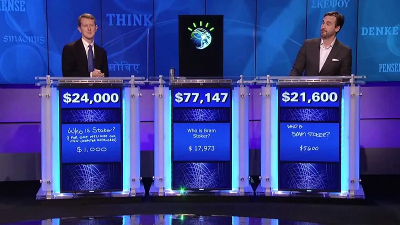
IBM / 2011
Watson on Jeopardy!
IBM’s own account of building a machine for a quiz show. Notice how much rides on one night of television.
The campaign archive / Edition 04 / Machine first

“Nobody minds a machine doing the listening. People mind when it starts doing the feeling.”
Edition 03 looked at campaigns made out of data. This one looks at campaigns made with machines, or about them, from a chess match in 1997 to a Christmas ad pulled in 2025. For each I ask one question. What did the machine actually do?
15 case studies / 1997 to 2025
Opening story / Cadbury / 2021
Before Diwali in 2021, Cadbury used machine learning to let small shops across India make their own ad starring Shah Rukh Khan. It went on to win the Creative Effectiveness Grand Prix at Cannes.
01 / The finding
Two of the three campaigns that kept the machine behind the scenes publish a modelled effect. easyJet’s system added an estimated £136m of profit in 2025, and an algorithm’s reading of cat owners shaped work for Temptations that returned $1.54 for every $1. None of the twelve that put the machine on screen has that kind of proof. The best they offer is a sales trend, a pre-test or a count of impressions.
The reaction splits the same way. When the machine gave people something they couldn’t have before, a star for a corner shop or a billboard in Piccadilly Circus, people loved it. When it replaced something they valued, a Christmas film they grew up with, they noticed, and McDonald’s pulled its film within days. Across the series, modelled effects number 1 in Edition 01, 13 in Edition 02, 6 in Edition 03, 2 here, 0 in Edition 05 and 0 in Edition 06.
This is the youngest evidence in the series. Most of these cases are less than five years old, and the effectiveness papers for generative work are still being written. Treat the finding as a first reading, not a verdict.
Modelled effectSales trendReach only or archival
02 / The patterns
Five of the series’ six mechanisms appear here, and demonstration leads. A machine on stage is still mostly a show of what it can do. Choose one to filter the archive.
Stage the benefit so people can see it for themselves.
Hand the audience a part to play and let them spread it.
Show people a judgement they did not know they held.
Put people in the picture who were missing from it.
Tie the brand to an occasion people already keep.
03 / The screening room
Four films from brand and project channels. Look for where the machine shows up, and where a person took over.

IBM / 2011
IBM’s own account of building a machine for a quiz show. Notice how much rides on one night of television.
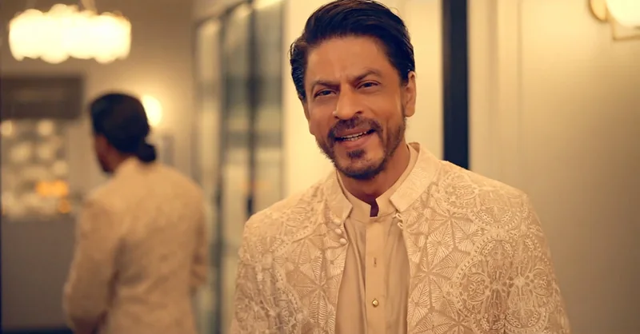
Cadbury / 2021
Listen for the shop names. Every version was different.
ING / 2016
Watch how long it takes to get to the brushstrokes.
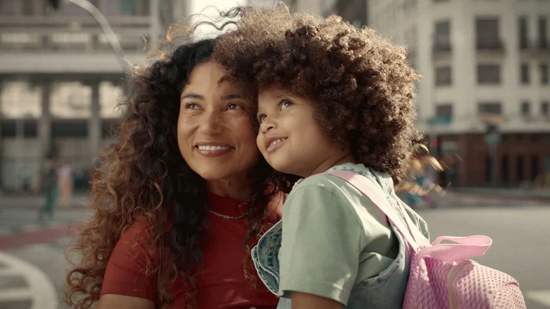
Dove / 2024
The prompts are simple. Watch the faces of the women reading the results.
04 / The collection
See the work alongside the machine behind it. Open each case for the film, image credit, my take and how it was measured.
Modelled effectSales trendSurveyReach only or archival
15 campaigns
Cannes Lions 2023 · Creative Effectiveness Grand Prix · Ogilvy Mumbai and Wavemaker for Mondelēz
Ogilvy Mumbai and Wavemaker used machine learning to let any small shop create a personalised ad in which Shah Rukh Khan named their business.
Use the machine to give people something they couldn’t get before.
My favourite AI idea anywhere. The machine didn’t replace anyone. It gave small shops a star they could never have afforded.
Image: Cadbury Celebrations and Ogilvy Mumbai, Shah Rukh Khan My Ad (2021) · Ogilvy
Lockdowns hit India’s small shops hard just before Diwali, Cadbury’s biggest season. In 2020 its ‘Not Just a Cadbury Ad’ had already promoted local businesses.
Cadbury lent its biggest asset to thousands of local shops. The machine made a star’s endorsement affordable for the smallest business.
It flips the usual deal. The brand gave its celebrity away to the people who sell its chocolate.
The work won the 2023 Cannes Creative Effectiveness Grand Prix and topped WARC’s ranking of the most effective campaigns that year. The 35% growth comes from coverage of the entry, and the public record doesn’t show how it was modelled.
The effectiveness entry reports business growth for the brand. The full method sits behind the awards records.
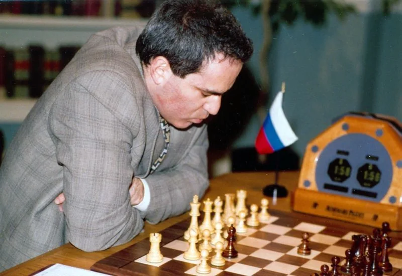
IBM / 1997 / DemonstrationDeep Blue v KasparovA computer beat the world chess champion, and a brand got the credit.Machine as the show · A chess supercomputer 3½ to 2½Deep Blue’s winning score · legacy factIBM Research, 1997
The six-game rematch was a public contest between a person and a machine, with IBM’s name on the machine.
When the product is invisible, a contest can make it visible.
The original AI stunt. It set the template every brand since has followed: put the machine against a person and let people watch.
Image: Monroe Newborn, Kasparov during game four (1997) · Computer History Museum
IBM’s Deep Blue had lost to Garry Kasparov in 1996. IBM Research sponsored a rematch in New York the following year.
Deep Blue won 3½ to 2½. Kasparov accused IBM of cheating, which only added to the drama, and the match became the moment many people first saw a computer out-think a champion.
It had a human face, an angry one. Kasparov’s reaction made the machine’s win feel real.
The record shows the match and its fame. No public source isolates what it did for IBM’s sales or reputation.
There is no effectiveness paper. The evidence is the historical record of the match.
IBM, 2011
In 2011 Watson played Jeopardy! against human champions on television.
A great demonstration creates expectations. The product has to meet them afterwards.
The most honest warning in this edition. A machine that wins on stage still has to work in the office.
Image: IBM Research, Watson and the Jeopardy! Challenge · official film thumbnail
IBM built Watson to answer questions in natural language, and chose the quiz show Jeopardy! as its public test.
Watson became IBM’s best-known product overnight. The business that followed struggled to live up to the show.
It made a machine look quick and clever in the most familiar format there is, a quiz.
The win made Watson famous. Wikipedia reports that by 2023 Watson had cost IBM far more than it earned. Fame and commercial success came apart.
There is no effectiveness paper. The record is the broadcast and what happened to Watson as a business.
Cannes Lions 2016 · Two Grand Prix · J. Walter Thompson Amsterdam for ING
J. Walter Thompson Amsterdam worked with Microsoft and others to analyse Rembrandt’s paintings with data and machine learning, then 3D printed a new portrait in his style.
If the machine makes something people can stand in front of, the story travels by itself.
Beautiful and much copied. I’d still like to know whether anyone opened an account because of it.
Image: ING and J. Walter Thompson Amsterdam, The Next Rembrandt (2016) · Güney Soykan’s project portfolio
ING sponsored Dutch art and culture and wanted to show that technology could create as well as calculate.
A bank became the name behind one of the most talked-about tech stories of the year.
It is a painting you can walk up to. The physical object makes the machine’s work feel real.
The agency reports 1.8bn impressions and two Cannes Grand Prix. These are self-reported reach figures. No public source links the project to ING’s customers or business.
The record is earned media and awards, reported by the agency.
Cannes Lions 2021 · Lay’s with Synthesia
With Synthesia, Lay’s recorded Messi briefly in a studio, then let fans generate a video of him speaking to a friend by name, in several languages.
AI can scale intimacy. Whether that sells crisps still needs measuring.
The friendliest use of a synthetic face in this edition. It worked because Messi agreed to it and fans controlled it.
Image: Lay’s, Messi Messages (2021) · still from Lay’s Football
Lay’s sponsored the UEFA Champions League and wanted fans to feel close to its star, Lionel Messi.
A celebrity endorsement became a personal message, made on demand.
Hearing a famous voice say your friend’s name is a strange, small thrill.
The campaign won a Cannes Lion. Its makers describe huge global shareability, but no public figure shows its effect on sales or the brand.
There is no published effectiveness record, only award entries and the makers’ own descriptions.
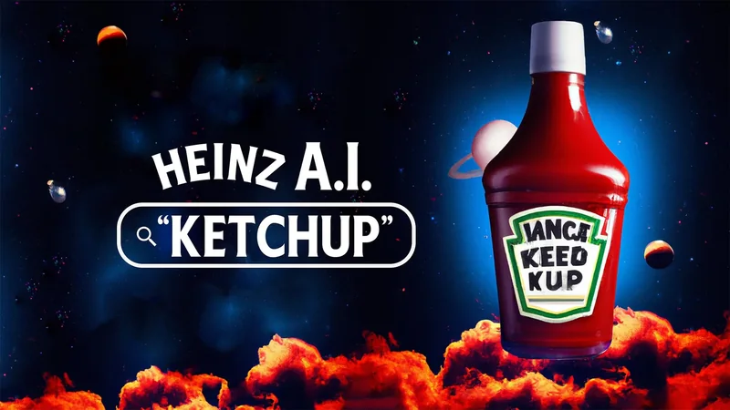
Heinz / 2022 / DemonstrationA.I. KetchupAsk a machine to draw ketchup, and it draws Heinz.Machine as the show · The DALL-E 2 image generator 1.15bnEarned impressionsWARC Creative 100, 2024 · Rethink for Heinz
Rethink asked DALL-E 2 to show what ‘ketchup’ looked like. Most results looked like Heinz, so the brand invited people to suggest prompts and turned the images into ads, galleries and special bottles.
If the machine’s answer flatters you, let it speak for you.
The smartest use of AI as a witness. It cost almost nothing and proved a point no ad could prove about itself.
Image: Heinz and Rethink, A.I. Ketchup (2022) · Xavier Blais’s creative portfolio
Heinz was so established it was synonymous with ketchup, but younger audiences didn’t see it as a contemporary brand.
The machine became an independent witness to the brand’s fame.
It is a brag disguised as an experiment. Heinz didn’t say it was the only ketchup. The machine did.
WARC reports more than 1.15bn earned impressions. That shows how far the joke travelled, not what it did for sales or for younger buyers.
The record counts earned impressions and coverage.
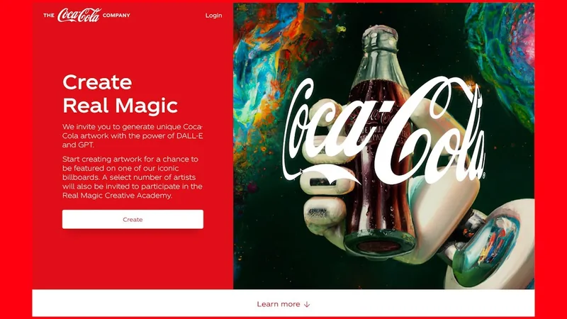
Coca-Cola / 2023 / ParticipationCreate Real MagicCoca-Cola handed its brand assets to the public, with AI tools.Machine as the maker · DALL-E and GPT, used by the public 120kImages created with Coca-Cola imagerySABRE Awards · Gold · Coca-Cola
Coca-Cola launched a platform that let creators use DALL-E and GPT with its iconic imagery. The best work appeared on billboards in Times Square and Piccadilly Circus.
Give people the tools and the stage, and they will make the brand theirs.
Put this next to the Christmas remake a year later. Same company, same tools. Here people did the making, and they loved it.
Image: Coca-Cola, Create Real Magic (2023) · official launch film thumbnail
Generative AI was everywhere, and many in tech were calling for a pause. Coca-Cola wanted younger audiences to make something with its brand.
The brand’s look became something people could play with rather than just watch.
Seeing your own picture on a billboard in Piccadilly Circus is a reward no discount can match.
The case reports over 120,000 images, more than 316m media impressions and 90% positive sentiment. These are reach and sentiment measures, not sales.
The case counts images, impressions, posts and sentiment.
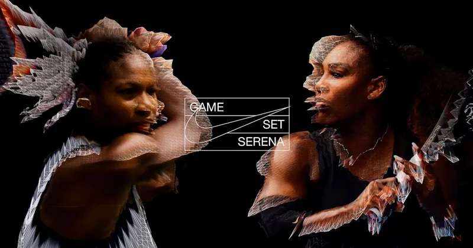
Nike / 2023 / DemonstrationNever Done EvolvingSerena Williams of 1999 plays Serena Williams of 2017.Machine as the maker · Machine-learning models of two Serenas 1999 v 2017The two Serenas who met · legacy factCannes Lions 2023 · Digital Craft Grand Prix · AKQA for Nike
AKQA trained machine-learning models on Serena Williams’ play at the 1999 US Open and the 2017 Australian Open, then simulated a match between the two.
Use the machine to show something true about a person that couldn’t be filmed.
The most respectful AI film here. It celebrates the athlete instead of replacing her.
Image: Nike and AKQA, Never Done Evolving · agency campaign artwork
Nike was marking its 50th anniversary and wanted to show what its athletes stand for: constant improvement.
An athlete’s career became a contest with herself, made possible by the machine.
It answers a question every sports fan has asked, which version of a champion was best.
The work won the Digital Craft Grand Prix at Cannes in 2023. No public figure shows its effect on sales or the brand.
There is no published effectiveness record, only awards.
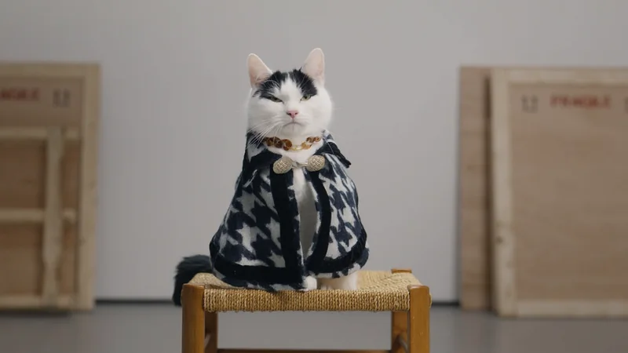
Temptations / 2023 / Exposing an assumptionCats Lose Their CoolAn algorithm studied cat owners, and the ads made cats lose their cool.Machine behind the scenes · An algorithm reading how people talk about cats $1.54Profit per $1 investedIPA 2024 · adam&eveDDB for Mars
adam&eveDDB’s ‘Cats Lose Their Cool’ was inspired by an algorithm that analysed how people talk about cats, and by a database of ‘perfect cat’ clichés from pop culture.
Let the machine listen, and let people write.
This is how I’d want AI in a creative department. It did the listening, and it never appeared in the ad.
Image: Mars and adam&eveDDB, Cats Lose Their Cool (2023) · still from the agency’s Artist spot
Temptations, Dreamies in the UK, dominated cat treats so completely that more advertising brought diminishing returns. Mars chose it for its biggest US pet-food launch in a decade.
The machine found the insight, and people made the jokes. Effortlessly cool cats lose all composure for a treat.
Every cat owner knows the moment a cool cat hears the treat packet. The ads live in that moment.
Econometrics estimate $75m of sales and $1.54 of profit for every $1 invested. The algorithm shaped the creative, so the model measures the advertising as a whole rather than the machine’s part in it.
An econometric model estimated the sales and profit the advertising added during the launch.
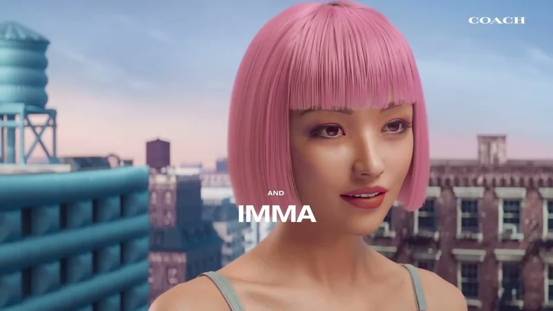
Coach / 2023 / RepresentationCourage to Be RealA luxury brand that tested its way to Gen Z.Machine behind the scenes · Creative pre-testing at every stage +46%Gen Z spending, year on yearIPA 2026 · Human Made Machine for Coach
From 2023 Coach pre-tested its creative at every stage of production with Human Made Machine, then used the results to shape its storytelling and steer global media spend, with YouTube as the lead channel.
Test early and often, then let the results move the money.
The machine here is a stopwatch, not a director. It told people which version worked, and people made it.
Image: Coach, Find Your Courage (2024) · official recap thumbnail
Coach wanted to win over Gen Z shoppers for whom an older handbag brand wasn’t an obvious choice.
Testing moved from a final check to part of how the work was made.
The films are about courage and self-expression, which is a nice irony for work shaped by so much testing.
By 2025 Coach had increased its lead as Gen Z’s preferred handbag brand, and in early 2026 it reported a record $2.14bn quarter with Gen Z spending up 46%. These are business trends, not a modelled estimate of the advertising or the testing.
The case links the pre-testing programme to brand preference and sales trends among Gen Z.
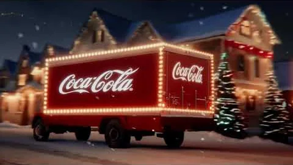
Coca-Cola / 2024 / Owning a momentHolidays Are Coming, RemadeThe ad that tested brilliantly and still upset people.Machine as the maker · Generative AI video 5.9Pre-test score, System1’s top ratingCoca-Cola, 2024
In 2024 Coca-Cola remade it with generative AI. Its marketing lead described the brief as bringing ‘Holidays Are Coming’ into the present, with AI as the solution.
A pre-test measures the ad. It doesn’t measure how people feel once they know how it was made.
This is the case for anyone who thinks testing settles the argument. It told Coca-Cola people liked the film, and it couldn’t tell them people would mind how it was made.
Image: Coca-Cola, Silver Santa (2024) · official film thumbnail
‘Holidays Are Coming’ is one of Coca-Cola’s best-loved Christmas films, built on nostalgia for the trucks and the lights.
The brand got attention, but for the wrong reason. Viewers online called the film uncanny and soulless, and the debate was about the tool, not the holidays.
It is a remake of a memory. That makes any strangeness in the pictures easy to spot and hard to forgive.
System1’s testing found an overwhelmingly positive response, and its panel didn’t notice the film was made with AI. The public reaction online turned negative anyway. The two measures disagree, and neither shows the effect on sales.
Pre-launch testing scored the emotional response to the film. The backlash shows up only in social reaction and press coverage.
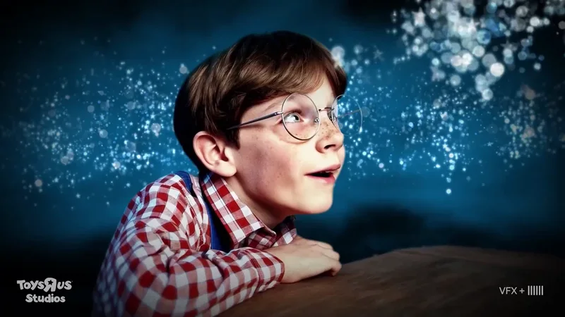
Toys “R” Us / 2024 / DemonstrationThe Origin of Toys “R” UsA brand film made almost entirely by a video model.Machine as the maker · OpenAI’s Sora video model SoraThe model that made it · legacy factCannes Lions 2024 premiere · Native Foreign for Toys “R” Us
Native Foreign used OpenAI’s Sora to make a short film about the founder’s childhood, almost entirely generated with some corrective effects and an original score. It premiered at Cannes Lions in 2024.
Being first with a tool is a story about the tool. Make sure that’s the story you want.
A brave test, and a useful one for everyone else. It showed how quickly people notice what’s missing.
Image: Toys “R” Us Studios and Native Foreign, The Origin of Toys “R” Us (2024) · still from the brand film
Toys “R” Us had closed its US stores in 2018 and was rebuilding the brand.
The conversation was about the tool. Critics called the film lifeless and worried about AI replacing creative work, while the company called it a successful test.
It looks like a dream of an advert, which is both its achievement and its problem.
The public record is reaction and coverage, much of it negative. The company called the film a success, but published no figures.
There is no published effectiveness record.
Dove, 2024
In ‘The Code’ women type prompts into AI image generators and get impossible results. Dove pledged never to use AI to represent real women in its ads and published a prompt playbook for more realistic images.
Sometimes the most powerful thing a brand can say about a technology is what it won’t do.
The neatest turn in the series. Dove, star of Edition 01, used AI as the villain to restate what it has always stood for.
Image: Dove, The Code (2024) · Dove’s Keep Beauty Real campaign page
Twenty years after the Campaign for Real Beauty began, AI image tools were producing a narrow, unrealistic idea of beauty.
Dove made its position on AI part of what the brand stands for.
The prompts are ordinary. The pictures they produce are not, and that gap is the whole argument.
The award entry reports 94% positive sentiment and the biggest press coverage in Dove’s history. These are self-reported reach and sentiment figures.
The record counts views, sentiment and coverage.
IPA 2026 · Bronze · VCCP, T&P and Kepler for easyJet
VCCP and partners built a system that combined media, creative and production, made assets for small behaviour-driving spaces first, and scaled what worked, using hand-picked creators and a content engine.
Build for the feed first, then scale what the feed tells you works.
This is where the money is. The least glamorous use of machines in the edition has the biggest proven return.
Image: easyJet and VCCP, Big Orange Sale (2025) · agency campaign artwork
Holiday booking had changed and media had fragmented into algorithm-driven feeds. Traditional campaigns had become a straitjacket for easyJet.
The campaign became a system that keeps learning, and the algorithm decided where the work went.
There is no single ad to remember, and that is the point.
Modelling estimates £136m of incremental profit in 2025, up 60% year on year, and a 49% rise in margin ROI against a 10% target. It is one of the strongest results in this edition, and it comes from the machine working behind the scenes.
Modelling estimated the incremental profit the system delivered and compared margin ROI with the target set for it.
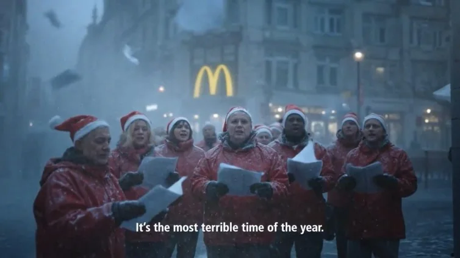
McDonald’s Netherlands / 2025 / Owning a momentThe AI Christmas AdA Christmas ad pulled after about three days.Machine as the maker · Generative AI imagery 3 daysRoughly how long it stayed online · legacy factMcDonald’s Netherlands, 2025
The 45-second film used generative AI. It went up on the brand’s Dutch YouTube channel in December 2025.
When a format is built on warmth, the audience will judge the method as much as the message.
Coca-Cola went first and took the hit. McDonald’s went second and still didn’t see it coming. That’s the lesson of this whole edition.
A year after Coca-Cola’s AI Christmas film, McDonald’s Netherlands made its own festive ad about the stress of the holidays.
Viewers called it creepy and cynical, and McDonald’s took it down within days, calling the episode an important learning. The production company defended the craft behind it.
It tried to be honest about Christmas stress, and the method drowned out the message.
The record is the backlash and the withdrawal. There are no published figures on effect.
There is no effectiveness record. The evidence is the reaction and the company’s decision.
No campaigns match. Try clearing the search or setting a filter back to All.
05 / The evidence
When the machine is the spectacle, a chess match, a quiz or an image generator asked to draw ketchup, the record is fame. It shows people watched. It rarely shows what the brand gained, and Watson shows fame and business can come apart.
When a machine makes the work, the record is reach and reaction. Cadbury is the exception, with business growth reported alongside a Cannes effectiveness award. Coca-Cola’s 2024 remake shows a pre-test and the public can disagree.
When the machine aims, tests or finds the insight, the effect can be modelled like any other advertising. The catch is that the model measures the whole campaign, not the machine’s share of it.
Two cases, Toys “R” Us and McDonald’s, have no published result at all. Their record is the public reaction and what the brand did next. I rate them archival, because a reaction is a fact about the work, not a measure of its effect.
Every case gets one of five ratings, strongest first: modelled effect, sales trend, survey, reach only and archival. A creative fact, such as the model a film was made with, is marked so it isn’t read as a result.
Each case made a machine part of the idea or the making, changed how people saw a brand, and has a public record. Each case lists its film, image credit and source for the results separately.
06 / Out now / Edition 05